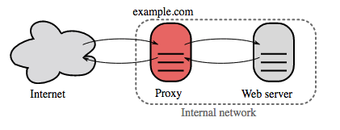

Load balancer

Source: Scalable system design patterns
Load balancers distribute incoming client requests to computing resources such as application servers and databases. In each case, the load balancer returns the response from the computing resource to the appropriate client. Load balancers are effective at:
Preventing requests from going to unhealthy servers
Preventing overloading resources
Helping to eliminate a single point of failure
Load balancers can be implemented with hardware (expensive) or with software such as HAProxy.
Additional benefits include:
SSL termination - Decrypt incoming requests and encrypt server responses so backend servers do not have to perform these potentially expensive operations
Removes the need to install X.509 certificates on each server
Session persistence - Issue cookies and route a specific client's requests to same instance if the web apps do not keep track of sessions
To protect against failures, it's common to set up multiple load balancers, either in active-passive or active-active mode.
Load balancers can route traffic based on various metrics, including:
Random
Least loaded
Session/cookies
Round robin or weighted round robin
Layer 4
Layer 7
Layer 4 load balancing
Layer 4 load balancers look at info at the transport layer to decide how to distribute requests. Generally, this involves the source, destination IP addresses, and ports in the header, but not the contents of the packet. Layer 4 load balancers forward network packets to and from the upstream server, performing Network Address Translation (NAT).
Layer 7 load balancing
Layer 7 load balancers look at the application layer to decide how to distribute requests. This can involve contents of the header, message, and cookies. Layer 7 load balancers terminate network traffic, reads the message, makes a load-balancing decision, then opens a connection to the selected server. For example, a layer 7 load balancer can direct video traffic to servers that host videos while directing more sensitive user billing traffic to security-hardened servers.
At the cost of flexibility, layer 4 load balancing requires less time and computing resources than Layer 7, although the performance impact can be minimal on modern commodity hardware.
Horizontal scaling
Load balancers can also help with horizontal scaling, improving performance and availability. Scaling out using commodity machines is more cost efficient and results in higher availability than scaling up a single server on more expensive hardware, called Vertical Scaling. It is also easier to hire for talent working on commodity hardware than it is for specialized enterprise systems.
Disadvantage(s): horizontal scaling
Scaling horizontally introduces complexity and involves cloning servers
Servers should be stateless: they should not contain any user-related data like sessions or profile pictures
Sessions can be stored in a centralized data store such as a database (SQL, NoSQL) or a persistent cache (Redis, Memcached)
Downstream servers such as caches and databases need to handle more simultaneous connections as upstream servers scale out
Disadvantage(s): load balancer
The load balancer can become a performance bottleneck if it does not have enough resources or if it is not configured properly.
Introducing a load balancer to help eliminate a single point of failure results in increased complexity.
A single load balancer is a single point of failure, configuring multiple load balancers further increases complexity.
Source(s) and further reading
NGINX architecture
HAProxy architecture guide
Scalability
Wikipedia)
Layer 4 load balancing
Layer 7 load balancing
ELB listener config
Reverse proxy (web server)

Source: Wikipedia
{kind=link}
A reverse proxy is a web server that centralizes internal services and provides unified interfaces to the public. Requests from clients are forwarded to a server that can fulfill it before the reverse proxy returns the server's response to the client.
Additional benefits include:
Increased security - Hide information about backend servers, blacklist IPs, limit number of connections per client
Increased scalability and flexibility - Clients only see the reverse proxy's IP, allowing you to scale servers or change their configuration
SSL termination - Decrypt incoming requests and encrypt server responses so backend servers do not have to perform these potentially expensive operations
Removes the need to install X.509 certificates on each server
Compression - Compress server responses
Caching - Return the response for cached requests
Static content - Serve static content directly
HTML/CSS/JS
Photos
Videos
Etc
Load balancer vs reverse proxy
Deploying a load balancer is useful when you have multiple servers. Often, load balancers route traffic to a set of servers serving the same function.
Reverse proxies can be useful even with just one web server or application server, opening up the benefits described in the previous section.
Solutions such as NGINX and HAProxy can support both layer 7 reverse proxying and load balancing.
Disadvantage(s): reverse proxy
Introducing a reverse proxy results in increased complexity.
A single reverse proxy is a single point of failure, configuring multiple reverse proxies (ie a failover) further increases complexity.
Source(s) and further reading
Reverse proxy vs load balancer
NGINX architecture
HAProxy architecture guide
Wikipedia
Application layer

Source: Intro to architecting systems for scale
Separating out the web layer from the application layer (also known as platform layer) allows you to scale and configure both layers independently. Adding a new API results in adding application servers without necessarily adding additional web servers. The single responsibility principle advocates for small and autonomous services that work together. Small teams with small services can plan more aggressively for rapid growth.
Workers in the application layer also help enable asynchronism.
Microservices
Related to this discussion are microservices, which can be described as a suite of independently deployable, small, modular services. Each service runs a unique process and communicates through a well-defined, lightweight mechanism to serve a business goal. 1
Pinterest, for example, could have the following microservices: user profile, follower, feed, search, photo upload, etc.
Service Discovery
Systems such as Consul, Etcd, and Zookeeper can help services find each other by keeping track of registered names, addresses, and ports. Health checks help verify service integrity and are often done using an HTTP endpoint. Both Consul and Etcd have a built in key-value store that can be useful for storing config values and other shared data.
Disadvantage(s): application layer
Adding an application layer with loosely coupled services requires a different approach from an architectural, operations, and process viewpoint (vs a monolithic system).
Microservices can add complexity in terms of deployments and operations.
Source(s) and further reading
Intro to architecting systems for scale
Crack the system design interview
Service oriented architecture
Introduction to Zookeeper
* Here's what you need to know about building microservices